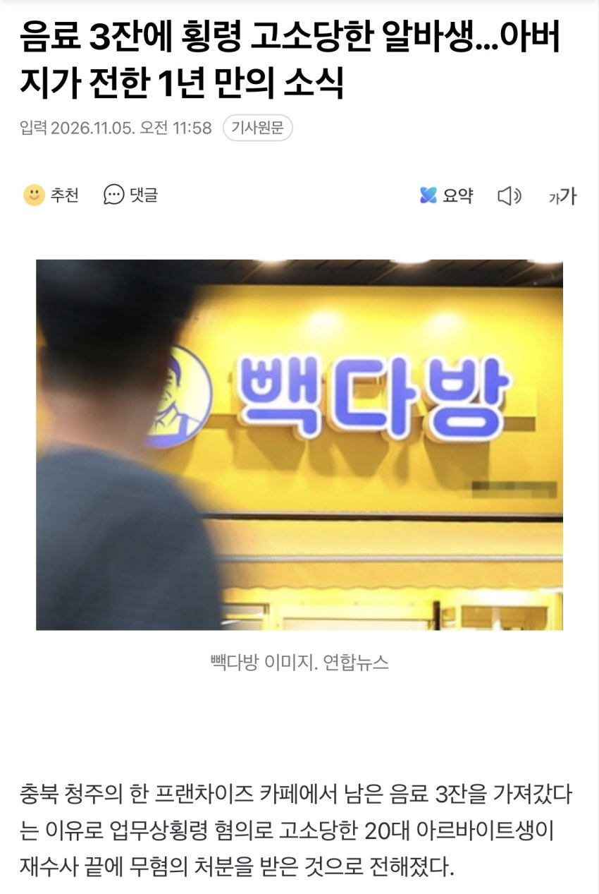
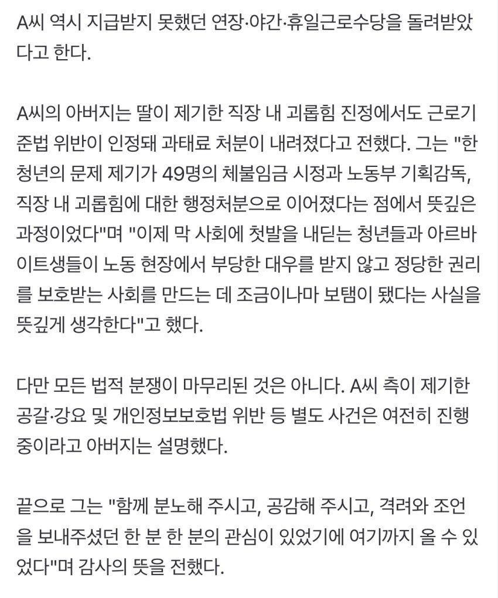

https://n.news.naver.com/mnews/article/088/0001038565?sid=102 음료 3잔에 횡령 고소당한 알바생…아버지가 전한 1년 만의 소식충북 청주의 한 프랜차이즈 카페에서 남은 음료 3잔을 가져갔다는 이유로 업무상횡령 혐의로 고소당한 20대 아르바이트생이 재수사 끝에 무혐의 처분을 받은 것으로 전해졌다. 아르바이트생 A씨의 아버지는 지난 2일 '청주n.news.naver.com출처: 백종원의 골목식당 갤러리 [원본 보기]

댓글
댓글 보관 대기 중입니다. 원문 응답 오류가 있으면 다음 실행에서 다시 수집합니다.